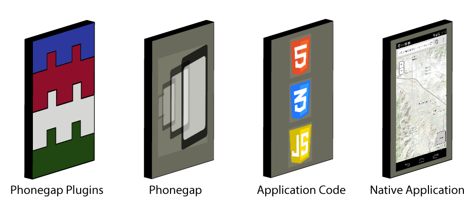
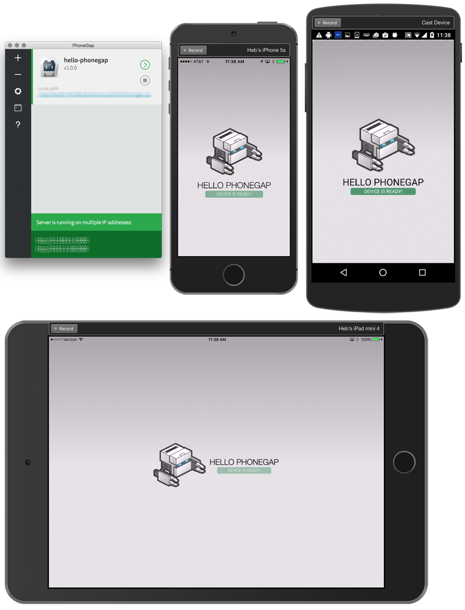
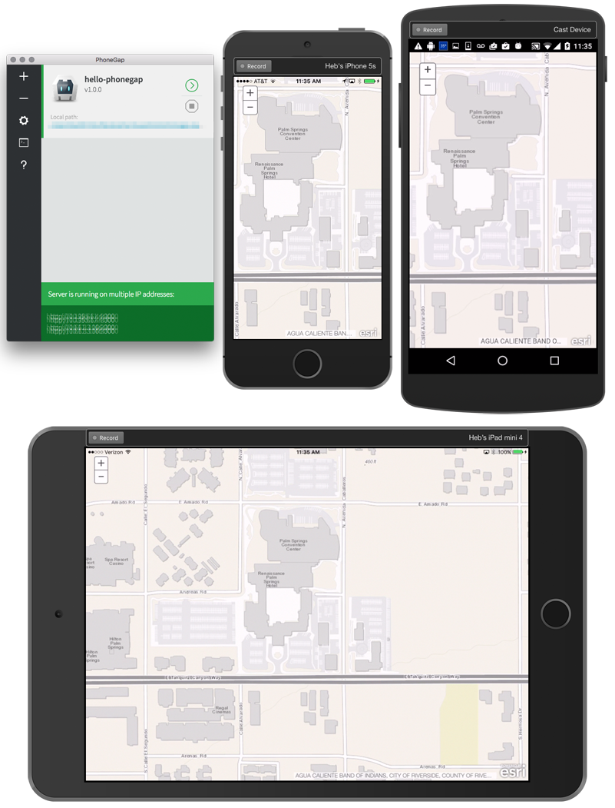
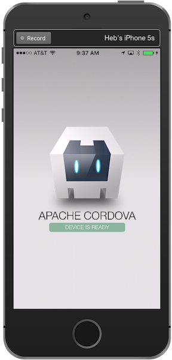
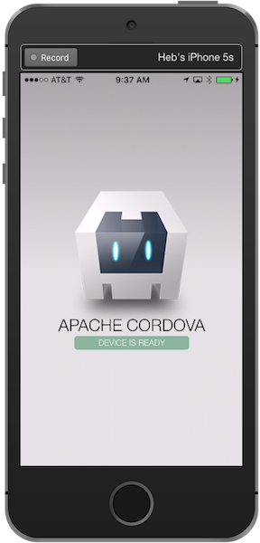
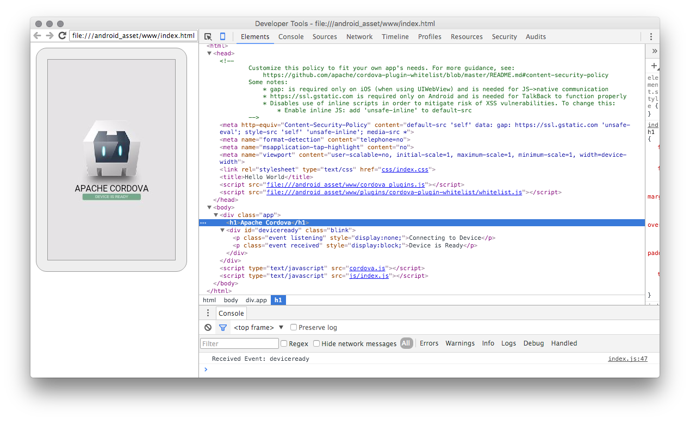
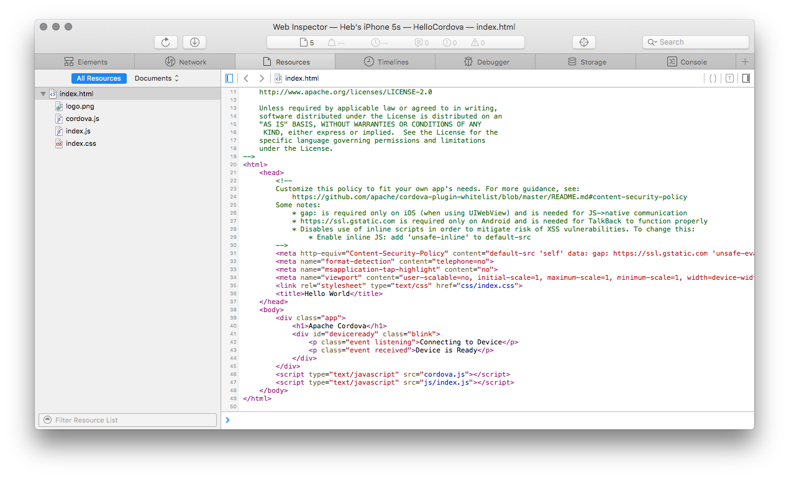

Using PhoneGap
What is PhoneGap?
This technology allows developers to leverage their existing web development skills in HTML, CSS, and JavaScript to write ArcGIS API for JavaScript based mapping application once and deploy it to multiple mobile device platforms as a native application. Adobe PhoneGap is the commercial supported version, whereas Apache Cordova is the open-source project that PhoneGap uses behind the scenes. They are interchangeably often referred to as PhoneGap.
Prerequisites
In order to deploy an application on the intended target platforms, you will need to setup and test those development environments and device platforms. Google Android and Apple iOS devices are very popular in the mobile device market and are a good start. For a full list of supported platforms, see the Supported Platforms section on the Apache Cordova website. It is beyond the scope of this help topic to begin covering how to setup the development environments necessary for each targeted device platform. Please see the Resources section for more information on setting up your development environment.
Testing on simulators works for a proof-of-concept, but the only way to know if your application is really going to work is to test it on a real device. For internal applications it may be possible to only test on a given device, but if the application is to be deployed to the general public then it will need to be tested on as many devices as possible. Used devices for development purposes can be purchased used or some regions have Open Device Labs where it may be possible to testing an application on various devices.
Introduction
- Native Application - Ready for deployment containing all application code and the PhoneGap container and plugins.
- Application Code - HTML, CSS, JavaScript, Plugin code, 3rd-party libraries, application code, and the ArcGIS API for JavaScript.
- PhoneGap - A framework that wraps a native web browser control for each deployment target and provides an interoperability layer between native device code (PhoneGap Plugins) and JavaScript code that allows the web application interact with the native device code (PhoneGap Plugins).
- PhoneGap Plugins - Native code for each supported device platform including the JavaScript that allows the web application to make calls to the native code.

Getting started
Adobe PhoneGap provides a desktop application PhoneGap Desktop that can create applications and serve them to connected devices. There is also a companion app PhoneGap Developer that is available for iOS, Android, and Windows. Finally Adobe provides a hosted cloud service PhoneGap Build that developers can upload their application as a zip file or pull from a public Github repo.
Note: In order to sign your applications you will need to provide a provisioning key or publisher id with your Adobe PhoneGap Build account. An Adobe Create Cloud account is needed for using the PhoneGap Build service, for more information see the Terms of Use.
Apache Cordova provides a Command-Line Interface (CLI) workflow in addition to a Platform-centered workflow to create, build, and deploy applications. Each platform that Apache Cordova supports has its own set of requirements and support, it is necessary to complete these requirements before attempting to develop applications for each platform.
Note: In order to use the Command-Line Interface (CLI) workflow in addition to the Platform-centered workflow to create, build, and deploy applications there are additional configuration requirements. Before running any command-line tools, you need to install SDKs for each platform you wish to target. (For more information, see the Apache Cordova Platform Guides for more details.)
PhoneGap Desktop and PhoneGap Developer
The following screenshots are from the basic Hello World PhoneGap tutorial application. For more information about the details of this application see the Hello World Explained article.

PhoneGap Hello Map
The following screenshots are from modifying the basic Hello World PhoneGap tutorial application to replace the default PhoneGap screen content with a map using the ArcGIS API for JavaScript. The key to integrating the ArcGIS API for JavaScript library into a PhoneGap application is to understand the PhoneGap event lifecycle. For more information on the available events, see the Apache Cordova events documentation.

Note: Attempting to load the map or other ArcGIS API for JavaScript components before the
onDeviceReadyevent has fired generally causes most issues when the application is not loading properly.
- Load the ArcGIS API for JavaScript from the CDN or
dojoConfigand local embedded reference- Listen for the
onDeviceReadyevent- Load the application
Using the CDN version of the ArcGIS API for JavaScript
Contents of /path-to-app/hello-phonegap/www/index.html
<html>
<head>
<meta charset="utf-8" />
<!--
Customize this policy to fit your own app's needs. For more guidance, see:
https://github.com/apache/cordova-plugin-whitelist/blob/master/README.md#content-security-policy
Some notes:
* gap: is required only on iOS (when using UIWebView) and is needed for JS->native communication
* https://ssl.gstatic.com is required only on Android and is needed for TalkBack to function properly
* Disables use of inline scripts in order to mitigate risk of XSS vulnerabilities. To change this:
* Enable inline JS: add 'unsafe-inline' to default-src
-->
<meta http-equiv="Content-Security-Policy" content="default-src 'self' http://basemaps.arcgis.com http://js.arcgis.com http://server.arcgisonline.com http://services.arcgisonline.com http://static.arcgis.com http://www.arcgis.com https://basemaps.arcgis.com https://js.arcgis.com https://server.arcgisonline.com https://services.arcgisonline.com https://static.arcgis.com https://www.arcgis.com blob:; connect-src 'self' http://basemaps.arcgis.com http://js.arcgis.com http://server.arcgisonline.com http://services.arcgisonline.com http://static.arcgis.com http://www.arcgis.com https://basemaps.arcgis.com https://js.arcgis.com https://server.arcgisonline.com https://services.arcgisonline.com https://static.arcgis.com https://www.arcgis.com; font-src 'self' http://js.arcgis.com https://js.arcgis.com data:; style-src 'self' http://js.arcgis.com https://js.arcgis.com 'unsafe-inline'; script-src 'self' http://js.arcgis.com https://js.arcgis.com 'unsafe-eval';">
<meta name="format-detection" content="telephone=no" />
<meta name="msapplication-tap-highlight" content="no" />
<!-- WARNING: for iOS 7, remove the width=device-width and height=device-height attributes. See https://issues.apache.org/jira/browse/CB-4323 -->
<meta name="viewport" content="user-scalable=no, initial-scale=1, maximum-scale=1, minimum-scale=1, width=device-width, height=device-height, target-densitydpi=device-dpi" />
<link rel="stylesheet" type="text/css" href="css/index.css" />
<!--
Using the CDN:
Include the CDN ArcGIS API for JavaScript stylesheet
-->
<link rel="stylesheet" href="https://js.arcgis.com/4.9/esri/css/main.css"/>
<title>PhoneGap Map</title>
<style>
/* Hide the default PhoneGap div */
.app {
display: none;
}
/* Set html, body height */
/* Set the map view div height */
html,
body,
#viewDiv {
padding: 0;
margin: 0;
height: 100%;
width: 100%;
}
</style>
</head>
<body>
<div class="app">
<h1>PhoneGap</h1>
<div id="deviceready" class="blink">
<p class="event listening">Connecting to Device</p>
<p class="event received">Device is Ready!</p>
</div>
</div>
<div id="viewDiv"></div>
<!--
Using the CDN:
Include the CDN ArcGIS API for JavaScript library
-->
<script src="https://js.arcgis.com/4.9/"></script>
<script type="text/javascript" src="cordova.js"></script>
<script type="text/javascript" src="js/index.js"></script>
</body>
</html>
Contents of /path-to-app/hello-phonegap/www/js/index.js
var app = {
// Application Constructor
initialize: function() {
this.bindEvents();
},
// Bind Event Listeners
//
// Bind any events that are required on startup. Common events are:
// 'load', 'deviceready', 'offline', and 'online'.
bindEvents: function() {
document.addEventListener('deviceready', this.onDeviceReady, false);
},
// deviceready Event Handler
//
// The scope of 'this' is the event. In order to call the 'receivedEvent'
// function, we must explicitly call 'app.receivedEvent(...);'
onDeviceReady: function() {
app.receivedEvent('deviceready');
},
// Update DOM on a Received Event
receivedEvent: function(id) {
var parentElement = document.getElementById(id);
var listeningElement = parentElement.querySelector('.listening');
var receivedElement = parentElement.querySelector('.received');
listeningElement.setAttribute('style', 'display:none;');
receivedElement.setAttribute('style', 'display:block;');
console.log('Received Event: ' + id);
// --------------------------------------------------------------------
// Load the Esri modules for creating a map and populate the
// map div element.
// --------------------------------------------------------------------
require([
"esri/Map",
"esri/views/MapView",
"dojo/domReady!"
], function(Map, MapView) {
var map = new Map({
basemap: "streets"
});
var view = new MapView({
container: "viewDiv",
map: map,
zoom: 4,
center: [15, 65]
});
});
}
};
app.initialize();
Using a local copy of the ArcGIS API for JavaScript
It is possible to locally embed the ArcGIS API for JavaScript library into the project. The best choice would be to use a custom build of the ArcGIS API for JavaScript in your application by using the Web Optimizer or npm custom build. However you could use the Compact build also.
The directory structure of the PhoneGap application looks like the following:
hello-cordova
├── config.xml
├── hooks
│ └── README.md
├── platforms
│ ├── android
│ ├── ios
│ └── platforms.json
├── plugins
│ ├── android.json
│ ├── cordova-plugin-whitelist
│ ├── fetch.json
│ └── ios.json
└── www
├── css
├── img
├── index.html
└── js
└── esrijs-custom-build
Place the ArcGIS API for JavaScript library into /path-to-app/hello-cordova/www/js/esrijs-custom-build/. Then in the application index.html set the baseUrl in the dojoConfig settings.
Contents of /path-to-app/hello-phonegap/www/index.html
<html>
<head>
<meta charset="utf-8" />
<!-- Customize this policy to fit your own app's needs. For more guidance, see:
https://github.com/apache/cordova-plugin-whitelist/blob/master/README.md#content-security-policy
Some notes:
* gap: is required only on iOS (when using UIWebView) and is needed for JS->native communication
* https://ssl.gstatic.com is required only on Android and is needed for TalkBack to function properly
* Disables use of inline scripts in order to mitigate risk of XSS vulnerabilities. To change this:
* Enable inline JS: add 'unsafe-inline' to default-src
-->
<meta http-equiv="Content-Security-Policy"content=" default-src 'self' http://basemaps.arcgis.com http://js.arcgis.com http://server.arcgisonline.com http://services.arcgisonline.com http://static.arcgis.com http://www.arcgis.com https://basemaps.arcgis.com https://js.arcgis.com https://server.arcgisonline.com https://services.arcgisonline.com https://static.arcgis.com https://www.arcgis.com blob:; connect-src 'self' http://basemaps.arcgis.com http://js.arcgis.com http://server.arcgisonline.com http://services.arcgisonline.com http://static.arcgis.com http://www.arcgis.com https://basemaps.arcgis.com https://js.arcgis.com https://server.arcgisonline.com https://services.arcgisonline.com https://static.arcgis.com https://www.arcgis.com; font-src 'self' http://js.arcgis.com https://js.arcgis.com data:; style-src 'self' http://js.arcgis.com https://js.arcgis.com 'unsafe-inline'; script-src 'self' http://js.arcgis.com https://js.arcgis.com 'unsafe-eval';">
<meta name="format-detection" content="telephone=no" />
<meta name="msapplication-tap-highlight" content="no" />
<!-- WARNING: for iOS 7, remove the width=device-width and height=device-height attributes. See https://issues.apache.org/jira/browse/CB-4323 -->
<meta name="viewport" content="user-scalable=no, initial-scale=1, maximum-scale=1, minimum-scale=1, width=device-width, height=device-height, target-densitydpi=device-dpi" />
<link rel="stylesheet" type="text/css" href="css/index.css" />
<!--
Using a local (embedded) copy:
Syntax for using a local copy of the ArcGIS API for JavaScript
-->
<link rel="stylesheet" href="./js/esrijs-custom-build/esri/css/main.css"/>
<title>PhoneGap Map</title>
<style>
/* Hide the default PhoneGap div */
.app {
display: none;
}
/* Set html, body height */
/* Set the map view div height */
html,
body,
#viewDiv {
padding: 0;
margin: 0;
height: 100%;
width: 100%;
}
</style>
</head>
<body>
<div class="app">
<h1>PhoneGap</h1>
<div id="deviceready" class="blink">
<p class="event listening">Connecting to Device</p>
<p class="event received">Device is Ready!</p>
</div>
</div>
<div id="map"></div>
<!--
Using a local (embedded) copy:
Syntax for using a local copy of the ArcGIS API for JavaScript
This tells the Dojo loader that we are going to load it locally
instead of using a URL reference.
-->
<script>
var dojoConfig = {
baseUrl: "./js/esrijs-custom-build/dojo"
};
</script>
<script src="./js/esrijs-custom-build/init.js"></script>
<script type="text/javascript" src="cordova.js"></script>
<script type="text/javascript" src="js/index.js"></script>
</body>
</html>
Contents of /path-to-app/hello-phonegap/www/js/index.js
var app = {
// Application Constructor
initialize: function() {
this.bindEvents();
},
// Bind Event Listeners
//
// Bind any events that are required on startup. Common events are:
// 'load', 'deviceready', 'offline', and 'online'.
bindEvents: function() {
document.addEventListener('deviceready', this.onDeviceReady, false);
},
// deviceready Event Handler
//
// The scope of 'this' is the event. In order to call the 'receivedEvent'
// function, we must explicitly call 'app.receivedEvent(...);'
onDeviceReady: function() {
app.receivedEvent('deviceready');
},
// Update DOM on a Received Event
receivedEvent: function(id) {
var parentElement = document.getElementById(id);
var listeningElement = parentElement.querySelector('.listening');
var receivedElement = parentElement.querySelector('.received');
listeningElement.setAttribute('style', 'display:none;');
receivedElement.setAttribute('style', 'display:block;');
console.log('Received Event: ' + id);
// --------------------------------------------------------------------
// Load the Esri modules for creating a map and populate the
// map div element.
// --------------------------------------------------------------------
require([
"esri/Map",
"esri/views/MapView",
"dojo/domReady!"
], function(Map, MapView) {
var map = new Map({
basemap: "streets"
});
var view = new MapView({
container: "viewDiv",
map: map,
zoom: 4,
center: [15, 65]
});
});
}
};
app.initialize();
Apache Cordova Command-Line Interface (CLI)
Follow the Cordova Get Started Fast guide:
- Install cordova:
npm install -g cordova- If for some reason there are issues during installation, adding
loglevelto theinstallcommand will provide more installation feedback:npm install cordova -g --loglevel info
- If for some reason there are issues during installation, adding
- Create the project:
cordova create hello-cordova - Add Android platform:
cordova platform add androidAdding android project... Creating Cordova project for the Android platform: Path: platforms/android Package: io.cordova.hellocordova Name: HelloCordova Activity: MainActivity Android target: android-23 Android project created with cordova-android@5.1.1 Discovered plugin "cordova-plugin-whitelist" in config.xml. Installing to the project Fetching plugin "cordova-plugin-whitelist@1" via npm Installing "cordova-plugin-whitelist" for android This plugin is only applicable for versions of cordova-android greater than 4.0. If you have a previous platform version, you do *not* need this plugin since the whitelist will be built in. - Run the app:
cordova run androidcordova run android ANDROID_HOME=/Users/UserName/Library/Android/sdk JAVA_HOME=/Library/Java/JavaVirtualMachines/jdk1.8.0_51.jdk/Contents/Home No target specified, deploying to device '04b76c5d3089fe44'. :preBuild UP-TO-DATE :preDebugBuild UP-TO-DATE :checkDebugManifest ........... :validateDebugSigning :packageDebug UP-TO-DATE :zipalignDebug UP-TO-DATE :assembleDebug UP-TO-DATE :cdvBuildDebug UP-TO-DATE BUILD SUCCESSFUL Total time: 1.579 secs Built the following apk(s): /path-to-app/hello-cordova/platforms/android/build/outputs/apk/android-debug.apk Using apk: /path-to-app/hello-cordova/platforms/android/build/outputs/apk/android-debug.apk LAUNCH SUCCESS- Note: If you receive an error similar to below, an update to the Android SDK is required.
ERROR running one or more of the platforms: Please install Android target: "android-23". Hint: Open the SDK manager by running: /Users/UserName/Library/Android/sdk/tools/android You will require: 1. "SDK Platform" for android-23 2. "Android SDK Platform-tools (latest) 3. "Android SDK Build-tools" (latest) You may not have the required environment or OS to run this projectInstalling Archives: Preparing to install archives Installing Local Maven repository for Support Libraries, revision 26 Installed Local Maven repository for Support Libraries, revision 26 Installing Google Repository, revision 24 Installed Google Repository, revision 24 Installing Intel x86 Emulator Accelerator (HAXM installer), revision 6.0.1 Installed Intel x86 Emulator Accelerator (HAXM installer), revision 6.0.1 Installing Android SDK Platform-tools, revision 23.1.0 Stopping ADB server succeeded. Installed Android SDK Platform-tools, revision 23.1.0 Installing Google APIs Intel x86 Atom System Image, Google Inc. API 21, revision 10 Installed Google APIs Intel x86 Atom System Image, Google Inc. API 21, revision 10 Installing Android SDK Tools, revision 24.4.1 Installed Android SDK Tools, revision 24.4.1 Stopping ADB server succeeded. Starting ADB server succeeded. Done. 6 packages installed.
- Note: If you receive an error similar to below, an update to the Android SDK is required.
- Add iOS platform:
cordova platform add iosAdding ios project... iOS project created with cordova-ios@4.0.1 Installing "cordova-plugin-whitelist" for ios - Open the project in Xcode:
path-to-app/hello-cordova/platforms/ios/HelloCordova.xcodeprojVerify code signing 

Debugging
For more information on remote debugging with Android see the Remote Debugging Devices topic on the Google Developers site.

For more information on remote debugging with iOS see the Remote Debugging Devices topic on the Google Developers site, and the Safari Web Inspector Tutorial on the Apple Developer website.

Privacy, Security, and Whitelists
It is important to declare what type of information an application collects, uses, or is required for an app to function properly. The application will likely prompt the device owner when installed and ask their permission to certain functionality on the device such as geolocation, contacts, camera, etc. For more information see the Apache Cordova Privacy Guide.
Applications will need to access resources, some of those might be on the device, and others will come from resources such as web services. Hardening the PhoneGap application is achieved through a variety of best practices, for more information see the Apache Cordova Security Guide. It is recommended by Apache Cordova to configure security through the cordova-plugin-whitelist for Android and iOS (as of their 4.0 releases), and for other platforms use the Network Request Whitelist which follows the W3C Widget Access specification.
Content Security Policy
It is recommended on Android and iOS that in addition to the network-request-whitelist, developers also use a Content Security Policy <meta> tag on all pages. As a best practice, it is recommended to not use 'unsafe-inline' or 'unsafe-eval' when possible. For more information on Navigation Whitelist, Intent Whitelist, and Network Request Whitelist see the cordova-plugin-whitelist readme on Github. For more information on Content Security policy see the HTML 5 Rocks tutorial on An Introduction to Content Security Policy and the Content Security Policy Reference.
<!-- NOTE:
As a best practice for security use a
content security policy (CSP) header: http://content-security-policy.com/
Best practices for mobile are to use SSL and CSP.
You can comment this out for testing, however be aware that PhoneGap
also may enforce additional security via the config.xml file.
-->
<meta http-equiv="Content-Security-Policy"
content="
default-src
'self'
http://webserver.example.com
http://basemaps.arcgis.com
http://js.arcgis.com
http://server.arcgisonline.com
http://services.arcgisonline.com
http://static.arcgis.com
http://www.arcgis.com
https://webserver.example.com
https://basemaps.arcgis.com
https://js.arcgis.com
https://server.arcgisonline.com
https://services.arcgisonline.com
https://static.arcgis.com
https://www.arcgis.com
blob:;
connect-src
'self'
http://webserver.example.com
http://basemaps.arcgis.com
http://js.arcgis.com
http://server.arcgisonline.com
http://services.arcgisonline.com
http://static.arcgis.com
http://www.arcgis.com
https://webserver.example.com
https://basemaps.arcgis.com
https://js.arcgis.com
https://server.arcgisonline.com
https://services.arcgisonline.com
https://static.arcgis.com
https://www.arcgis.com;
font-src
'self'
http://webserver.example.com
http://js.arcgis.com
https://webserver.example.com
https://js.arcgis.com
data:;
style-src 'self'
http://webserver.example.com
http://js.arcgis.com
https://webserver.example.com
https://js.arcgis.com
'unsafe-inline';
script-src
'self'
http://webserver.example.com
http://js.arcgis.com
https://webserver.example.com
https://js.arcgis.com
'unsafe-eval';
">
Summary
Following this guide should decrease the time it takes for a developer to get started with PhoneGap and the ArcGIS API for JavaScript. The ArcGIS API for JavaScript samples for use with PhoneGap/Cordova (quickstart-map-phonegap) build upon the content in this guide topic, use them as a resource following this article for more information.
Developers that have experience with native application development will have an advantage over those that do not. The developer environment setup with installing Android Studio, Apple Xcode, joining the Apple Developer Program, configuring the targeted devices for development, and provisioning the devices for deployment can take some time. First time developers without previous native application development experience are likely to get frustrated quickly as there is significant setup for a new development machine. Some advice would be to tackle the setup in pieces and do not try to do it all at once.
Resources
- Esri
- Choosing the Right Platform
- Quickstart PhoneGap Map
- jQuery Mobile Map
- PhoneGap jQuery Mobile Technical Workshop Resources
- Android Geolocation Plugin: GPS or NETWORK-based location providers - GitHub, NPM
- Smashing Magazine
- Development tools: Node, Adobe PhoneGap, Apache Cordova
- Mobile frameworks
- Android
- Apple
- Apple Safari
- Apple Safari Developer Center
- WebKit Downloads (Safari daily builds)
- Google Chrome
- Chrome Canary (Chrome daily builds)
- Remote Debugging with Google Chrome